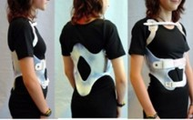

The signs and symptoms of kyphosis vary, depending upon the cause and severity of the curve. These
may include:
Rounded shoulders
A visible hump on the back
Mild back pain
Fatigue
Spine stiffness
Tight hamstrings (the muscles in the back of the thigh)
Rarely, over time, progressive curves may lead to:
Weakness, numbness, or tingling in the legs
Loss of sensation
Changes in bowel or bladder habits
Shortness of breath or other breathing difficulties
Causes of kyphosis?
Kyphosis can be congenital (present at birth) or due to acquired conditions that may include the
following:
Metabolic problems
Neuromuscular conditions
Osteogenesis imperfecta, also called brittle bone disease; a condition that causes bones to fracture
with minimal force.
Spina bifida
Scheuermann’s kyphosis: a condition that causes the vertebrae to curve forward in the upper back
area; the cause of Scheuermann’s kyphosis is unknown and is commonly seen in males
Postural kyphosis: the most common type of kyphosis; it generally becomes noticeable in
adolescence and can be associated with slouching versus a spinal abnormality. Exercise is used to
help correct posture.
"Kyphosis is more common in females than males"
Treatment
The goal of treatment is to stop progression of the curve and prevent deformity.
Nonsurgical treatment may include:
1 - Specific exercises
2 - Bracing

3 - Nonsteroidal anti-inflammatory drugs (NSAIDs). NSAIDs, including
aspirin, ibuprofen, and naproxen, can help relieve back pain